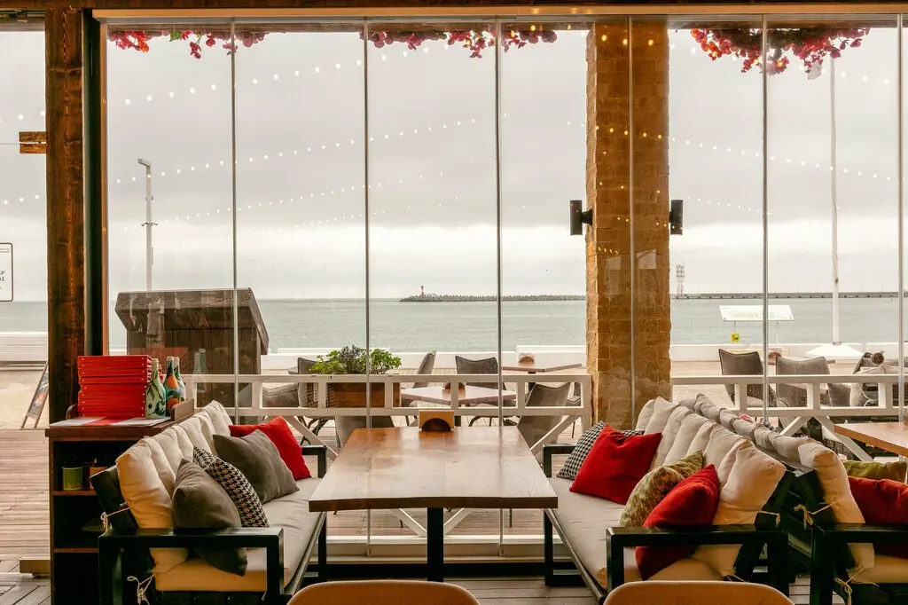
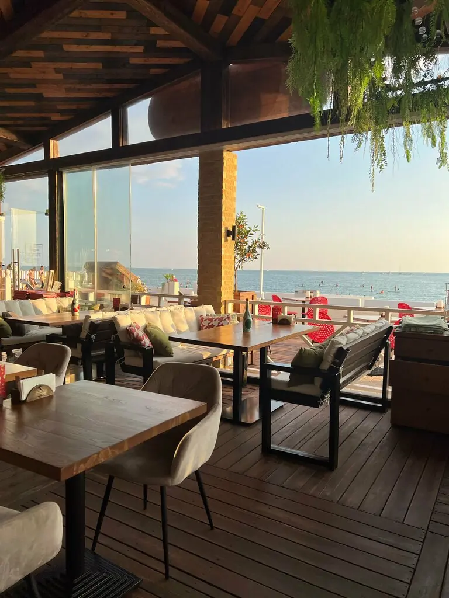
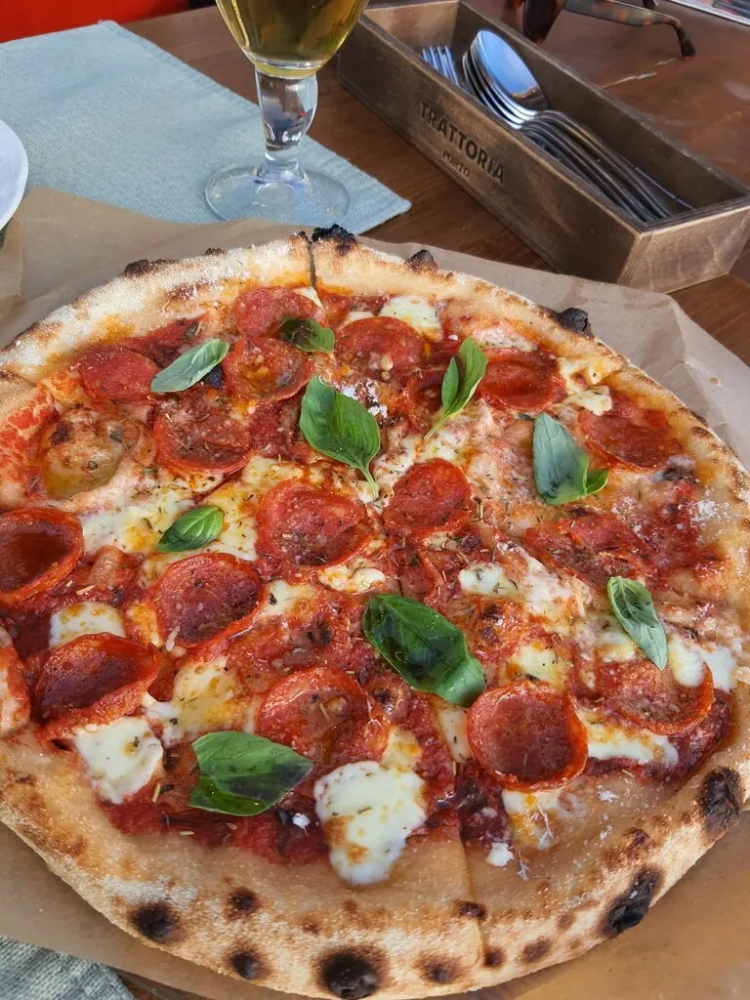
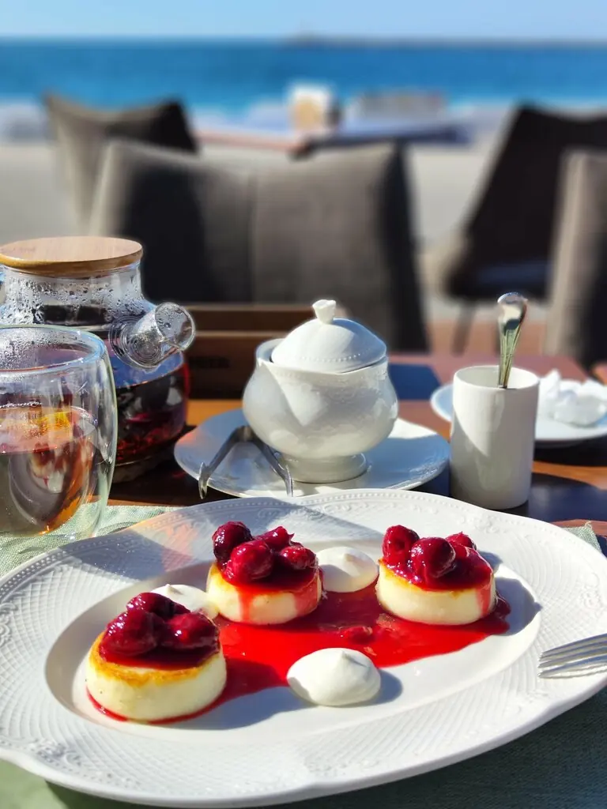
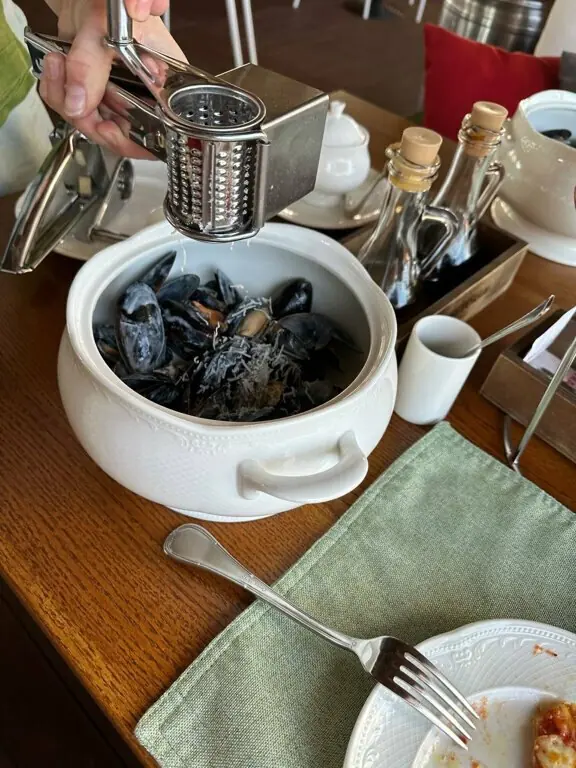
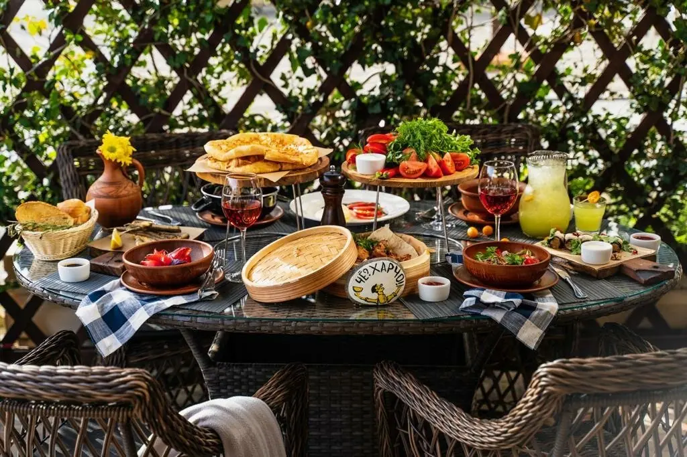
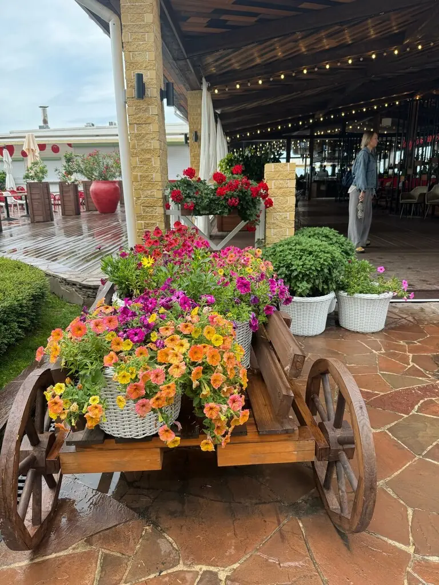

Траттория Порто
Паста, пицца и завтраки там, где заканчивается набережная и начинается море.
5,0 · 1604 оценки
После пляжа — сюда
Гости заходят на завтрак перед морем и возвращаются к ужину на закат. Зал со стеклянными стенами, мягкие диваны, цветы на старой телеге у входа и 250 мест, но вид стоит занять заранее.

Меню с причала
Часть меню с Яндекс Карт, цены уточняйте у официанта.
Как это выглядит





Говорят гости
Пришли на обед после пляжа, это самый вкусный борщ в Сочи!Виктор Хохлов
Лучшая пицца карбонара, самое красивое место в Сочи.Мирослав Михайлов
Ходили сюда на завтраки и ужины пока были на отдыхе. Шикарный вид на море.Виктория К.